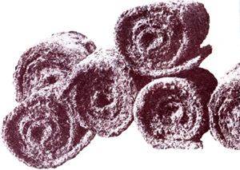
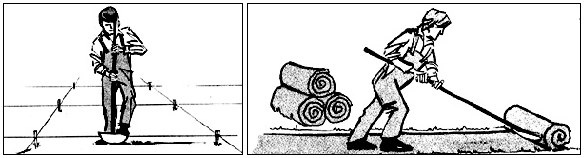

Our cash crop-grass-really and truly does pay us over $6,000 an acre. And this isn't that expensive illegal "grass" that you smoke, either. It's plain old ordinary sod. The kind a great number of golf courses, nurseries, landscape contractors, and private parties are always eager to buy.
Figure it out for yourself: There are 43,560 square feet in an acre and the current wholesale price for sod here in Yakima, Washington is 15 cents a square foot. That pencils out to $6,534 an acre. And even allowing for some waste around the edges and during cutting, we usually do better than that ... since we always sell at least some of our harvest retail for 20 to 26 cents a square foot.
Growing and selling sod is like any other business: The people who take enough pains to do it right have the least trouble marketing their product for a premium price.
We plow and run a disc over our acre in the fall and work In a liberal seasoning of manure. Then we let the weeds die and the dirt settle during the winter.
The following spring we rake out all the clods, sticks, and rocks and hand-level the patch of earth just as evenly as we possibly can (this makes cutting the sod much easier later on).
You can seed your plot of land any time from early spring through late fall ... but seeds planted during hot weather generally do poorly, and you're taking a chance on "freezing out" your grass if you plant It after the first of October.
"Bargain" grass seed always seems to contain so many weeds when it comes up that it never turns out to be a bargain after all. Buy the best grade of seed you can find. Here in our part of Washington, that means you'll be spending $1.49 to $1.52 a pound for the approximately 218 pounds of seed that you'll need to plant your acre. (Which is a total of $330 for both your acre's seed and fertilizer it, like us, you get cow manure "free for the hauling" from a nearby dairy.)
We prefer a good blend of Kentucky bluegrass here in Yakima, but different grasses grow differently in different climates. Ask the county agent or the folks at your local plant nursery or food and seed store if you need help picking out the best blend of seed for sod in your area.
Most seed stores will rent (at low cost) or loan (at no cost) a grass seeder to anyone who deals with them. Take advantage of this service. Grass that is hand-seeded tends to look far more spotty (and, therefore, is worth less) during its first couple years of growth than grass planted with a seeder.
Another tip: Many stores which offer loaner seeders to their customers buy a now machine every spring and then, after one season's use, sell it for hardly anything at all in the fall. We bought ours for $10 this way and it was well worth the investment since it was the nearest thing to new when we got it and we use it a lot.
As soon as your seed is on the ground, roll it in. This is important. We didn't roll ours the first time and we lost a lot of what should have been a good stand of grass to the wind and the rain.
You can rig up your own roller by filling an old junkyard water tank (they're getting harder to find) with cement, welding or otherwise fastening. pipe "handles" to each end, and then pulling it across your seeded plot with ropes. It's crude, but it works.
If you don't want to go to that trouble, however, you can rent a roller. Or you can buy one of the handy new lightweight designs (it should cost only about $15) that you fill with water when you want to use it and then drain for storage.
After your seed has been planted and evenly rolled, sprinkle it lightly with water. If you live in an area as dry as it is here around Yakima, you may also have to irrigate the plot of land from time to time to make the grass grow. (You folks in the wetter parts of the country are the lucky ones)
Once the grass is well up, you can let' your chickens run on it if you wish. It's good grazing for them and they'll pick bugs out of the sod and fertilize it as they go. (just don't allow the birds to over graze the stand of grass and actually hurt it.)
Treat your plot of sod just about the way you'd treat any lawn or pasture. Mow it as soon as it's three inches tall and regularly thereafter (this will encourage the gross to spread into a thick, dense carpet that'll command a premium price when you're ready to sell it). A reel mower-which cuts -rather than a rotary mower-which whips off the grass-is better for the job, but the choice is not that critical. Use whichever mower you prefer ... or already have.
There are two schools of thought on what to do with the clippings from a place of sod. Some growers just "leave am lay" where they fall, and others prefer to catch or rake up the clippings from each mowing. We vote with the second group, since we find that our sod stays greener and is bothered less by gnats and bugs when we catch the clippings. Besides, we find all those grass trimmings quite useful when fed to the neighbor's horse, our chickens, and the compost pile.
Once your grass celebrates its first birthday, it's ready for market. And, if our experience is any indication, you shouldn't have any trouble finding ready buyers for the sod.
Our whole marketing effort-and we've sold sod for the past three years-consists of a small classified ad in the local shopper. (Almost every area has one or more of these advertising newspapers now and the classified rates are usually very reasonable.
I must admit that I was somewhat pessimistic when we placed our first 75 cents ad in the Penny Press. After all, who is going to be interested in buying someone ,else's lawn? Lots of people, that's who! It wasn't long after that initial ad appeared until we were out there in our little field, cutting and rolling sod.
If you keep your stand of grass mowed down to a height of one and a half or two inches-leave it a little longer in hot climates, so it won't scorch-you'll always be ready to cut an order of sod on one day's notice. And do cut and roll your sod only on order: This "crop" is somewhat fragile and should be kept moist and put in place in its new home as quickly as possible.
The night before you're to deliver an order of sod (or, if you're lucky, the night before you're to prepare it for pickup), flood or soak the area to be harvested. Really wet it down. Drench it.
Then, the next morning-using stakes and string to keep the rows straight-mark that section of your plot off in strips that measure either 1" X 5' or 2' X 5' (sections of sod this size are relatively easy for one or two people to handle).
Now you're ready to cut! We do the job with a sharp-the sharper, the better-lawn edging tool. Just use the implement to cut a line two or three inches deep all the way around one of the sections you've marked off. Then insert the edger under one end of the strip, nudge up a two-inch-thick "pod" of roots and soil, and start rolling the sod into a "jelly roll".
If you try to peel up less than two inches of roots and dirt, your sections of sod won't hold together very well. Nor will the strips stick together the way they should if they're too dry. So wet your sod down really good the night before you cut it and then skin off a good, consistent two inches of soil and roots as you roll up each section.
The beat sod commands the best price, so-as you cut and roll it-cover each strip of the "harvest" with wet burlap. It's also a good idea to keep the rolls shaded. redampen the burlap as necessary, and-of course-see to it that the sod is laid in its new home as quickly as possible.
In most cases, you'll find that your customers will want you to cut, roll, and deliver the sod they buy. The purchaser will then pay you 15 cents a square foot and lay the sod himself. It you're requested to do that part of the job too, however, your price should escalate into the 20 to 26 cents range. It's up to you to decide whether or not you want to get into that end of the business.
Some states insist that all sod raised for commercial sale must be sprayed with pesticides before it's hauled from one location to another. Other states have no such law on the books. Check out the situation In your area before you're ready to make your first sale, instead of after.
Bear in mind. too, that this is no "get rich quick" business we're talking about. The dollar yield per acre for sod can be extremely attractive ... but the payoff comes only once on each crop and only after one full year. Plan accordingly.
Just because I've quoted the amount of money that one acre of sod will yield. doesn't mean that you have to start on that scale. A city lot measuring only 70 by 150 feet can produce sod worth $1,575. That's worth going after, and many people with pieces of ground no bigger than that do, indeed, go after it.
And, to close on a bright note, I'd like to emphasize that this is one small enterprise that pays well for a really minimum amount of effort. Our acre "cash crop" of sod always takes far less effort from us than the much smaller garden we raise every year. We simply reseed each section of the "lawn"as we harvest it ... and then let the new grass do most of the work.
Nope. This isn't the ideal sideline businness for everyone. But, for us, it's been a welcome way to earn a fairly substantial sum of money every year ... with a minimum amount of work. Truly, our sod operation has helped us put our homestead on a self-supporting basis much faster than we'd ever have reached that goal without it.
So fast, in fact, that-after three years-we're now phasing this particular cash crop out entirely because we really don't need it anymore. I hope, if you decide to try it, that the sod business is as good to you.
At first glance, it may seem that cutting sod from a piece of land is a terribly destructive thing to do. And it is. But it's no more destructive, in the long run, than raising hay or wheat or corn or cattle on the same piece of land and then shipping any one or all of those "crops" away for sale in the next state or in a country halfway around the world. Kept up long enough without the application of restorative "organic" matter, any one of the above forms of farming will eventually deplete the soil just as surely as any of the others. It's just that sod farming does it more obviously than most forms of agriculture.
As a matter of fact, a better environmental case can be made for raising sod than for some of the other forms of agriculture mentioned here in at least one respect: Sod is very seldom hauled from one state to another-let alone from one country to another-so the organic value of a sod farm's product, on the average, stays much closer to home than the corresponding value of a wheat, corn, cattle, etc., farm's product.
And, to consider just one other aspect of the situation, no one can deny that thousands of acres ravaged by floods, strip mining, and other disasters-both natural and man-made-have been restored by sod transplants. Yet how many acres have transplants of wheat, corn, or cattle ever restored? So you pays your money and you takes your choice. But whatever that choice may be- whatever crop you decide to raise-please do your farming in such a way that you leave the land a little better every year than it was the year before. -The Editors.
Thanks to a 1976 Tax Court case (John W. Meyers, 66 TC 235), the Internal Revenue Service has issued Revenue Ruling 77-12. This ruling reverses a position held for more than 20 years and holds that a deduction for resource depletion can be claimed upon the sale of sod or balled nursery stock. That is: Each time balled nursery stock or sod is sold from a piece of land, the landowner making the sale can deduct an allocated portion of his land cost from the income he receives on the sale.
In the Meyers case, the Tax Court has apparently allowed a taxpayer in the business of producing and selling sod to allocate 34% of the cost of his land to topsoil ... on the assumption that the residual value of that property-without topsoil-would be only 66% of Its value as sod producing land.
Furthermore, since it was determined in this case that 16 cuttings of sod would deplete-or "use up"-all the topsoil on the land in question, it is presumed that 1/16 of the total value allocated to topsoil can be depleted each time a cutting of sod is made.
How can you justify a similar deduction? Demonstrate to the IRS's satisfaction the percentage of your land's cost which should be allocated to topsoil and the number of sod or balled nursery stock harvests which can be made from that topsoil before it is exhausted. It will then be a simple matter for you to make the proper prorated deduction from your; Income tax each time you sell sod or balled nursery stock from your land.
(And thanks to MOTHERS favorite CPA - whose professional standards prevent us from publishing his name - for researching and reporting on the Meyers case for us. - The Editors)
|
 After staking out several 2' X 5' plots of grass, a sharp lawn edging tool is used to make two- to three-inch deep cutts all the way 'round each section... then?with the aid of the edging imlement?you can lift up one of a strap and start rolling the pad of grass into a ""jelly roll"". |
 |
|